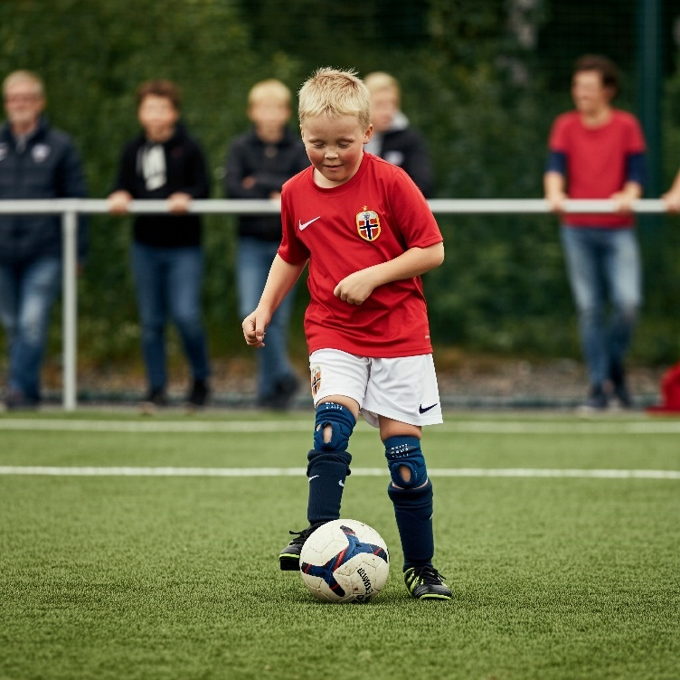

Know the steps to help someone with disability feel comfortable joining a team.
Identify how to start conversations with families or support workers in a respectful way.
Explore real-world barriers like transport, routines, and confidence and how to reduce them.
Use tools like visual guides to prepare and support players.
“The first step into a club is often the hardest. Your role is to make it easier—and warmer.”
Have you ever thought about joining a sporting group, but it seems too hard or you find that you get too anxious?
Here are some tips to help you.
How to Join a Sport Club
Look for clubs that are inclusive and welcoming through internet searches, recommendations, council websites,
community noticeboards, and sporting associations.
Ask about any modifications or support the club can offer for people with disability when making an enquiry.
If they can help, you know that is the right club for you.
See if the club offers any free trials.
Try different sports to find one you enjoy.
Attend with a friend or family member the first time for support.
Research clubs with inclusive policies and ask about previous experiences of players with disability.

Overcoming Barriers
Anything is possible, just ask. Think about what you need and who can help.
How to get to the venue?
Community transport
Family or carer
Public transport
Taxi, Uber, etc.
Travel training
Car pooling
Accessible facilities:
Let the club know what you require. For example, a ramp, accessible bathroom,
visual cues, or even a communication tool.
Building your confidence:
When you explore new experiences, it is normal to feel uncomfortable, uncertain, and anxious.
You are stepping outside of your comfort zone and you are not alone.
Don’t be too hard on yourself. Take small steps to feel comfortable.
Remain positive to overcome any challenges you face.
Meeting people:
Clubs can offer solutions like a trainer, mentor, or buddy system.
Many sporting clubs also celebrate wins through recognition and have a social aspect to them,
such as team bonding sessions.
Joel’s Journey – Joining His Local Rugby Club with Support
“They didn’t just make room for Joel—they made him part of the team.”
Joel is a 24-year-old man with an intellectual disability and high social anxiety.
For years, he loved watching rugby from the sidelines but never believed he could play.
His local club in regional New South Wales changed by taking practical,
person-centred steps to help him feel included.
The support Joel was given:
A quiet introduction:
Before his first session, Joel visited the club after hours with his dad and a committee member
to meet the coach without the noise of training.
This helped reduce his anxiety and gave him a chance to ask questions in a calm setting.
A flexible role:
Joel began as the water runner, helping during drills and getting used to being on the field.
Over time, he joined in simple passing games and warm-ups at his own pace.
Visual guidance:
The coach used a visual schedule with icons to show the training plan,
such as warm-up, skills, break, and game.
This helped Joel prepare and feel more in control.
Buddy system:
Joel was paired with a younger player who explained drills and supported him with transitions.
This peer support helped Joel build trust and feel like one of the team.
Respectful coaching:
The coach used clear, calm instructions and gave Joel time to respond.
Feedback focused on effort, not outcome:
“Great pass, Joel! I love how you stayed focused.”
Parent partnership:
The club checked in regularly with Joel’s family to adapt his participation
and ensure he felt safe and valued.
The Outcome
Joel now trains weekly and plays short halves in friendly games.
His anxiety has decreased significantly, and his confidence has grown,
both at the club and at home.
He has made genuine friendships, and his teammates celebrate his involvement
as a win for the whole club.
“Joel says the club is the first place he felt fully accepted.
He wears his jersey everywhere.
They didn’t just include him, they respected him.”
Joel’s mum
End of Module 2. We hope the tips in this module will help you try a sporting club.